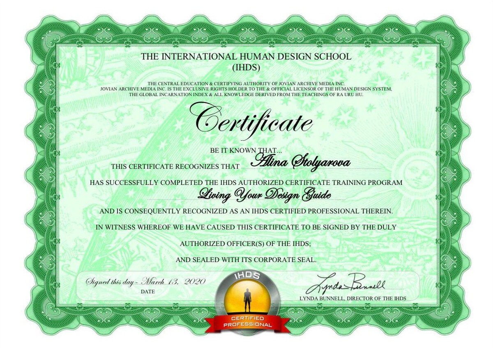

Аналитик и Гид курса "Проживая свой дизайн", Генератор 5/1. Практикующий психолог. В 2016 году окончила курс МГУ "Основы психологии", в 2019 году окончила психотерапевтическую программу "Фокусинг" Международного Института Фокусинга, в 2021 году окончила программу МПГУ "Клиент-центрированная психотерапия" и магистерскую программу ВЕИП "Психоанализ".
Курс «Проживая свой дизайн» 2017 год (Юлия Ланская)
Курс «АВС» 2018 год (Виктор Крючков)
Курс «Картография» 2018 год (Виктор Крючков)
Курс Аналитиков ДЧ «PTL1» 2019 год (Виктор Крючков)
Курс гидов «Проживая свой дизайн» 2019 год (Виктор Крючков)
Курс Аналитиков «PTL2» 2020 год (Виктор Крючков)
Курс Аналитиков «PTL3» 2021 год (Виктор Крючков).
На данный момент обучается окончила курс «PTL4» (Виктор Крючков) и проходит сертификацию.
Дополнительно повышает свою квалификацию на курсах мэтров в области ДЧ таких, как Алокананд Дей Рио, Петр Шебер, Мартин Грассенгер, Бина Репнина.
